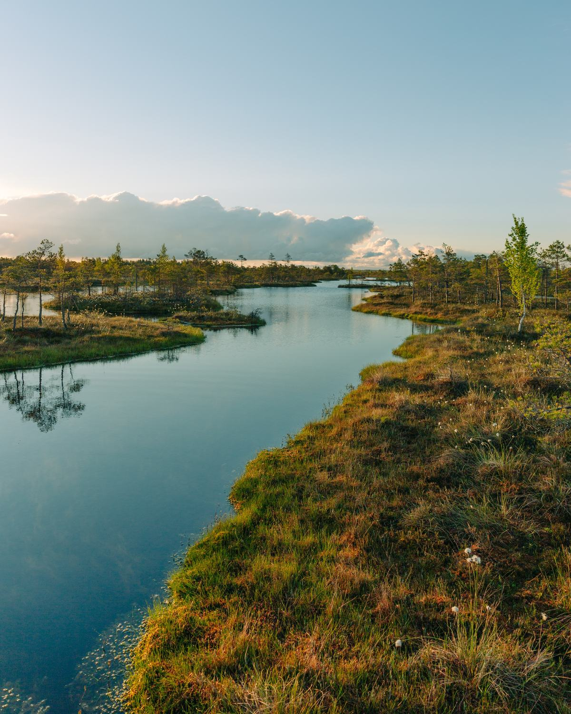

Misión
Ofrecer soluciones ambientales y sanitarias eficientes que respalden el cumplimiento normativo y promuevan la sostenibilidad, mediante consultoría técnica especializada y un compromiso constante con la calidad y los resultados.
Bosconia, Cesar · Colombia
Gestionamos sus trámites ambientales y elaboramos estudios hidrológicos e hidráulicos, servicios forestales y planes de gestión ambiental para empresas, entidades públicas y personas naturales, con soporte técnico de principio a fin.

Sobre nosotros
MAMCA S.A.S. es una empresa de consultoría ambiental y sanitaria con sede en Bosconia, Cesar. Acompañamos a empresas, entidades públicas y personas naturales con soluciones técnicas, prácticas y ajustadas a la normativa vigente: desde estudios hidrológicos e hidráulicos y servicios forestales hasta la elaboración de planes ambientales y la gestión completa de trámites ante la autoridad ambiental competente.
Ofrecer soluciones ambientales y sanitarias eficientes que respalden el cumplimiento normativo y promuevan la sostenibilidad, mediante consultoría técnica especializada y un compromiso constante con la calidad y los resultados.
Consolidarnos como una empresa líder en consultoría ambiental a nivel nacional, reconocida por su excelencia técnica, su compromiso con la sostenibilidad y su capacidad para ofrecer soluciones efectivas, innovadoras y adaptadas a las necesidades de cada cliente.
Nuestros servicios
Elija un servicio para ver qué incluye. Si no sabe cuál necesita, escríbanos y le orientamos sin compromiso.
Sección especializada
Analizamos y modelamos el comportamiento del agua en cuencas y cauces para que su proyecto se diseñe de forma segura y cumpla los requisitos de la autoridad ambiental.
Trámites ambientales
Preparamos los soportes técnicos, diligenciamos los formularios, radicamos la solicitud ante la autoridad competente (Corpocesar, ANLA u otras, según el caso) y atendemos los requerimientos hasta la decisión.
Servicios forestales
Levantamos en campo la información que necesitan sus trámites, planes y proyectos, y la entregamos en bases de datos e informes técnicos.
Gestión y planificación ambiental
Instrumentos de planificación y gestión para que su organización o municipio cumpla sus obligaciones ambientales y mejore su desempeño.
Cómo trabajamos
Escuchamos su necesidad, revisamos la información disponible y, si hace falta, visitamos el sitio.
Le enviamos por escrito el alcance, los entregables, el tiempo estimado y el valor.
Levantamos la información, hacemos los análisis y modelaciones, y elaboramos los documentos según la norma vigente.
Cuando aplica, radicamos ante la autoridad competente y atendemos sus requerimientos.
Entregamos documentos e información georreferenciada, y le orientamos sobre las obligaciones posteriores.
Toda la información de MAMCA S.A.S. en un PDF, listo para compartir con su equipo o entidad.
Preguntas frecuentes
Ante la autoridad ambiental competente según el proyecto: principalmente Corpocesar en el departamento del Cesar, y otras corporaciones autónomas regionales o la ANLA cuando corresponde.
Depende del tipo de trámite y de los tiempos de evaluación de la autoridad ambiental. En la cotización le indicamos el tiempo estimado para elaborar los documentos. Después de radicar, hacemos seguimiento y respondemos los requerimientos para evitar demoras.
La decisión final corresponde siempre a la autoridad ambiental. Lo que sí garantizamos es un trabajo técnico sólido, ajustado a la normativa vigente, y el acompañamiento en los requerimientos hasta que la autoridad decida.
Por lo general: documento de identidad o certificado de existencia y representación legal, certificado de tradición y libertad del predio (o autorización del propietario) y la descripción de la actividad o proyecto. En el diagnóstico inicial le indicamos los requisitos exactos de su caso.
Sí. Además de empresas y personas naturales, acompañamos a entidades públicas y presentamos cotizaciones y propuestas técnicas según los requisitos de cada proceso de contratación.
Sí. Nuestra sede está en Bosconia (Cesar) y atendemos proyectos en otros municipios. Las visitas de campo y los desplazamientos se incluyen en la cotización.
Sí. Las capacitaciones de educación ambiental se pueden hacer de forma presencial o virtual, con módulos adaptados al público y a los objetivos de su organización.
Escríbanos por WhatsApp, por correo o con el formulario de esta página. Nos ayuda que nos cuente la ubicación del proyecto, el tipo de actividad y qué documentos tiene disponibles.
Contacto
¿Necesita un trámite ambiental, un estudio hidrológico o un inventario forestal? Cuéntenos su caso y le respondemos con una propuesta.
Al enviar, se abrirá WhatsApp con su mensaje listo. Solo tiene que presionar Enviar.